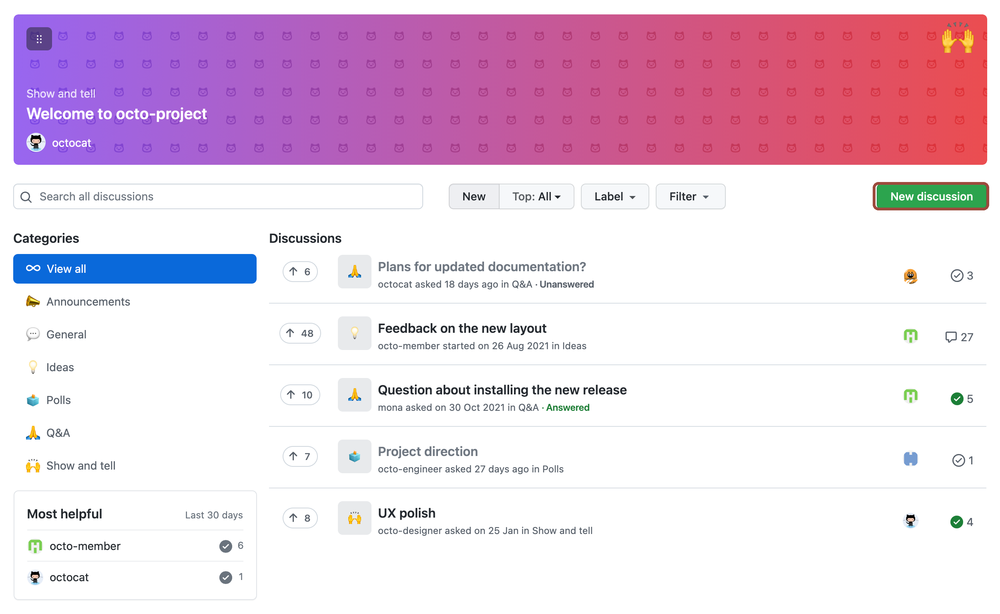
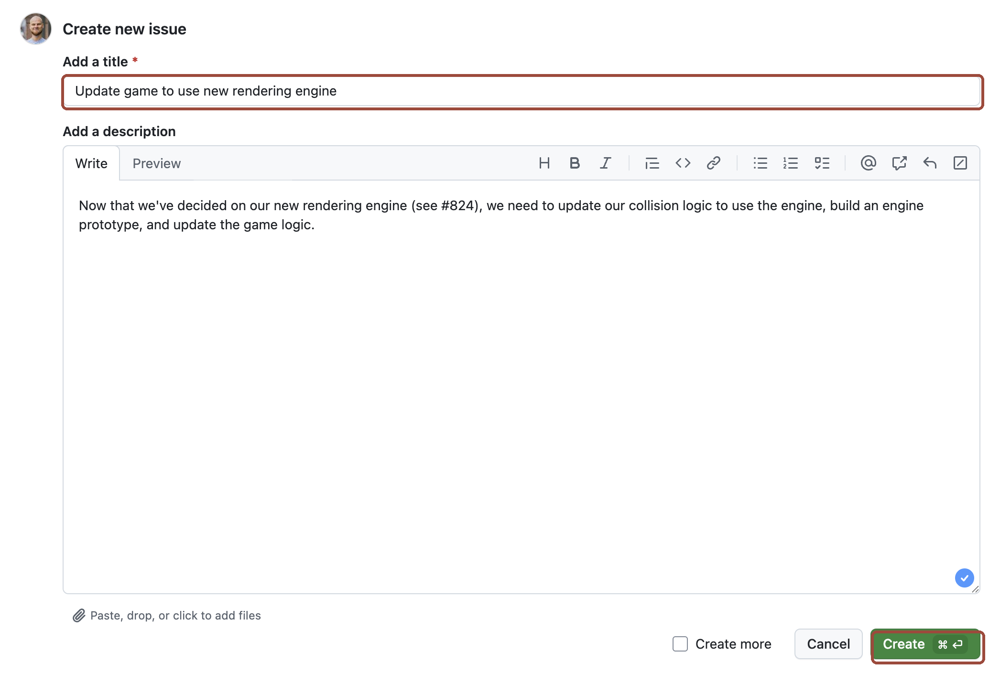

4What to contribute, and how
4.1Ways to contribute
If you're set up and wondering what would actually be useful — any of these, roughly easiest first:
- Ask or answer a question in Discussions (§4.5). No setup, and questions are contributions too — they show where the notes are unclear.
- Fix a typo or a small error in an existing note — the web editor (§1.2) does this from the browser, nothing installed.
- Upload the slides for a lecture that's missing them, into that module's
slides/folder. - Expand or correct an existing note — add what the lecturer said that the note missed, or fix something that doesn't match the lecture.
- Add notes for a recent lecture — the core contribution. The start-to-finish walkthrough is §3.1; how to write the note itself is §4.2.
- Write practice questions or worked solutions into a module's
questions/folder. - Pick up an open Issue — a known gap someone has already flagged (§4.5).
4.2Writing notes in Markdown
The notes in this repo are Markdown files — plain text with a .md ending, where formatting is written as ordinary punctuation: # for a heading, **bold** for bold. Any editor can open them, GitHub displays them as formatted pages, and because they're just text, two people's edits to the same note can be compared and merged line by line. That's the whole reason this repo uses them instead of Word documents.
This is all the syntax most notes ever need:
| You type | You get |
|---|---|
| # Heading / ## Subheading | Section titles, biggest to smallest |
| **bold** and *italic* | bold and italic |
| - one point per line | A bulleted list |
| 1. first step | A numbered list |
| [GLUT4 review](https://…) | A clickable link |
|  | An image, displayed in the page |
| `TP53` | Code or gene names: TP53 |
| > quoted line | An indented quote — good for "the prof said…" |
| $p^2 + 2pq + q^2 = 1$ | A maths formula, rendered by GitHub |
Tables and more are in GitHub's own syntax reference, but you can go a long way on the nine rows above. Prefer learning by doing? GitHub's free Communicate using Markdown course walks you through all of it interactively in about half an hour.
Seeing it rendered while you type. In VS Code, open a .md file and press Ctrl+Shift+V (Mac: Cmd+Shift+V), or click the preview icon at the top-right of the editor — a formatted preview opens beside the text and updates as you type:

Editing it like a document. If you'd rather not see the raw text at all, install the Markdown Editor extension by adamerose: click the Extensions icon in VS Code's left sidebar (four squares), search markdown editor, pick the one by adamerose, and click Install. Your .md files then open in a visual editor — headings, tables, and images render in place while you type, like a notes app. Ctrl+Shift+E flips the current file between the visual editor and plain text whenever you need to see or edit the raw Markdown.

Worked examplePut a slide diagram into your lecture-3 note
- Have your note open in VS Code — say
PHM5001/notes/lecture-03-variant-calling.md. - Screenshot the diagram: Win+Shift+S on Windows, Cmd+Ctrl+Shift+4 on Mac. Both copy the selected region to the clipboard.
- Click the spot in your note where the image belongs and paste (Ctrl/Cmd+V). VS Code saves the screenshot as an image file next to your note and inserts the
link for you. - Check the preview — the image should appear right there in the note.
- Commit as normal (§3.3). The image is a file like any other: it gets committed alongside the note, and GitHub renders the two together.
Using the visual editor from the extension above? If a paste doesn't land, press Ctrl+Shift+E to flip to plain text, paste there, and flip back.
Optional, but keeps the notes folders tidy — route pasted images into an images/ subfolder automatically:
In VS Code: File → Preferences → Settings, search markdown copy files, and under Markdown › Copy Files: Destination click Edit in settings.json, then add:
"markdown.copyFiles.destination": { "**/*.md": "images/" }- Screenshots of individual diagrams are fine; don't screenshot a whole deck into a note — the deck itself belongs in
slides/. GitHub also rejects any file over 25 MB. - Working in the web editor (§1.2)? You can't paste images there — upload them instead via Add file → Upload files into the module's
notes/images/folder, then link with.
If you'd rather use a proper notes app. Obsidian (free) gives the closest Notion-like feel while still editing the repo's actual files: File → Open folder as vault → pick your cloned repo folder, and you get live-rendered editing, image pasting, and offline use — every change lands in the same files git tracks, so committing works exactly as in §3.3. Two settings to keep its output GitHub-compatible, both under Settings → Files & links: turn off "Use [[Wikilinks]]", and set "Default location for new attachments" to In subfolder under current folder, named images.
Why not Notion, Word, or Google Docs. They keep your notes in their own cloud or format, not as files in the repo — sharing means manually exporting every time, exports scramble image links, and reviewers can't see line-by-line what changed. They're fine for private drafting (that's what personal/ is for, too), but the shared copy is the .md file in the repo.
4.3Format & quality bar
- Write in Markdown (
.md) wherever the content is text — it's the one format this repo can actually diff and merge. New to it? §4.2 covers everything you need. Reserve PDFs/PPTX for material you genuinely can't reproduce as text, like original slide decks. - Match a file to a lecture or topic, not the whole module. Smaller files merge cleaner and are easier for someone else to extend.
- Say where something came from — which lecture, which slide, which reading.
- Flag what you're unsure about instead of smoothing it into confident prose. "Need to check this against the recording" is a completely acceptable thing to commit.
4.4What gets rejected — and how to fix it
The main thing reviewers push back on is content nobody actually checked — most often, a block of text pasted straight from an LLM with no editing and no verification against the lecture. It's usually recognisable: generic textbook phrasing, unnaturally even coverage of every subtopic, confident claims that don't quite match what was taught.
Using AI as a tool — to tidy your own phrasing, generate a first pass you then check and rewrite, or quiz yourself on material — is fine. What gets sent back is unverified output presented as notes. The bar: you understood it well enough to stand behind it.
If a reviewer flags something:
- If it just needs editing, revise it on the same branch and push again — no need for a new PR.
- If it's not something you're ready to stand behind yet, move it to that module's
personal/folder instead of deleting it outright, and contribute a version you've actually verified when you can.
4.5Discussions, Issues & filling gaps
Two different tools for two different needs:
- Discussions — open-ended. Ask a question, compare understanding of a concept, argue about a professor's slide. Nothing here needs to resolve into an action.
- Issues — specific and actionable. "PHM5004 lecture 6 has no notes yet," "the diagram in
PHM5001/notes/mitosis.mdlooks wrong." Something a PR can close.


If you see an open issue you can fix: comment that you're picking it up, so two people don't duplicate the work, then do it on a branch and reference it in your PR description with Closes #<number> — GitHub closes the issue automatically when the PR merges.